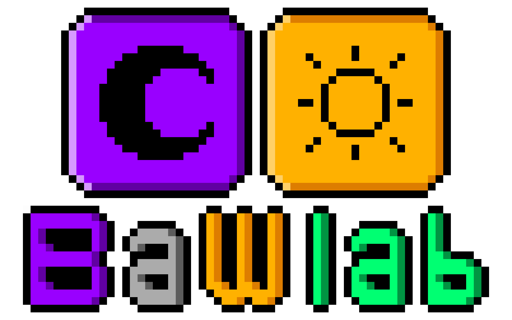
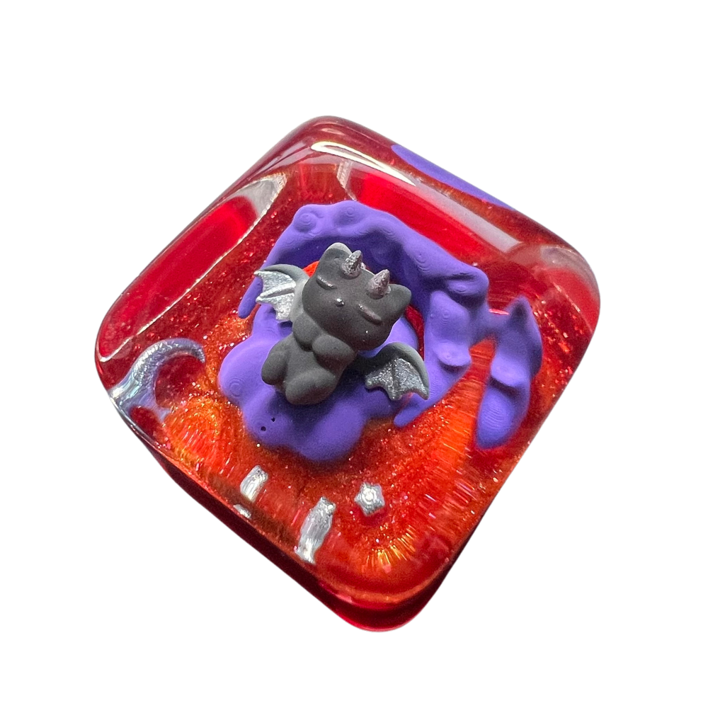
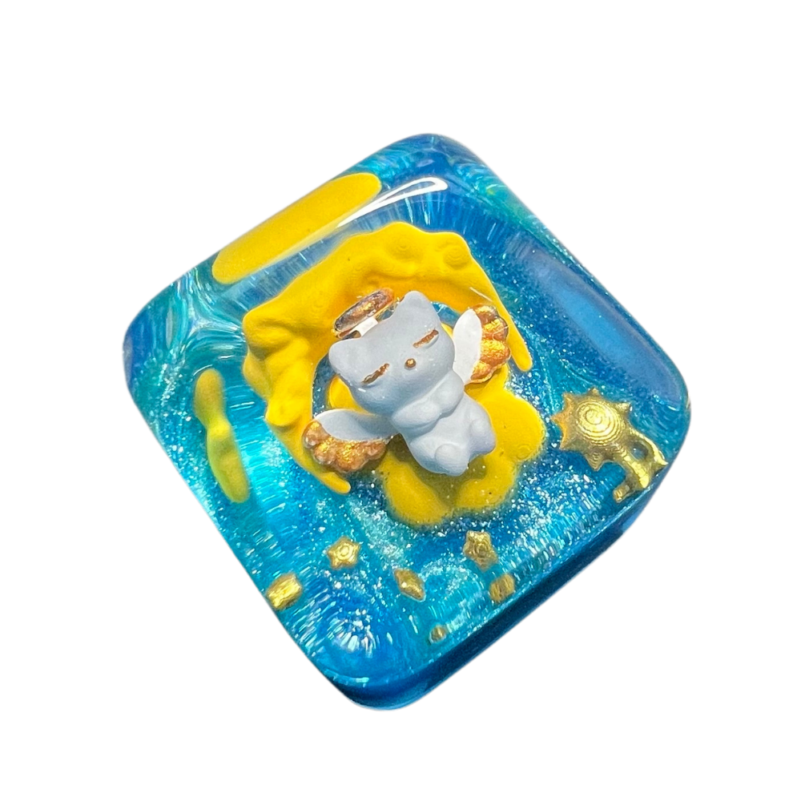

Concept & Design
Each keycap begins with a concept, character, and silhouette designed around both visual balance and keycap fit.


Black and White laboratory
Handmade artisan keycaps made in Korea.
"Built on contrast"

About BaWlab
BaWlab stands for Black and White laboratory.
Each artisan keycap captures
opposing moods — darkness and light, calm and energy, depth and warmth, and beyond —
in a small transparent world.
Making Process
Each keycap begins with a concept, character, and silhouette designed around both visual balance and keycap fit.
Small figures and details are painted by hand, combining brush work and air brushing for controlled color depth.
Molds are made for transparent dome casting, then resin is carefully poured to preserve clarity and shape.
Each piece is trimmed, inspected, polished, and checked before final packaging.
Finished keycaps are packed with care to protect the surface and complete the BaWlab experience.